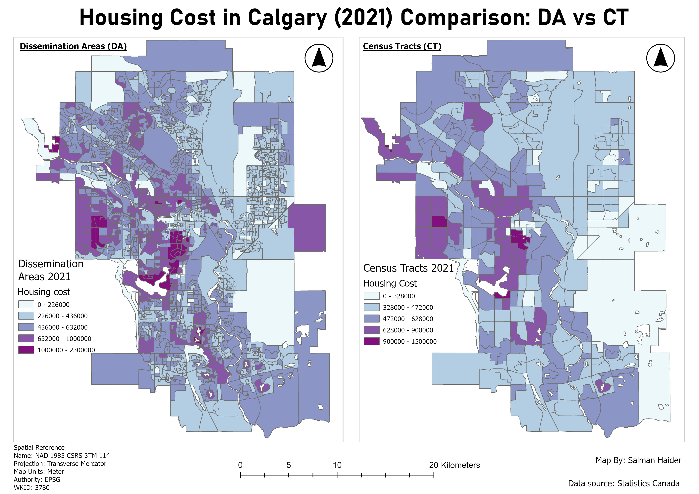
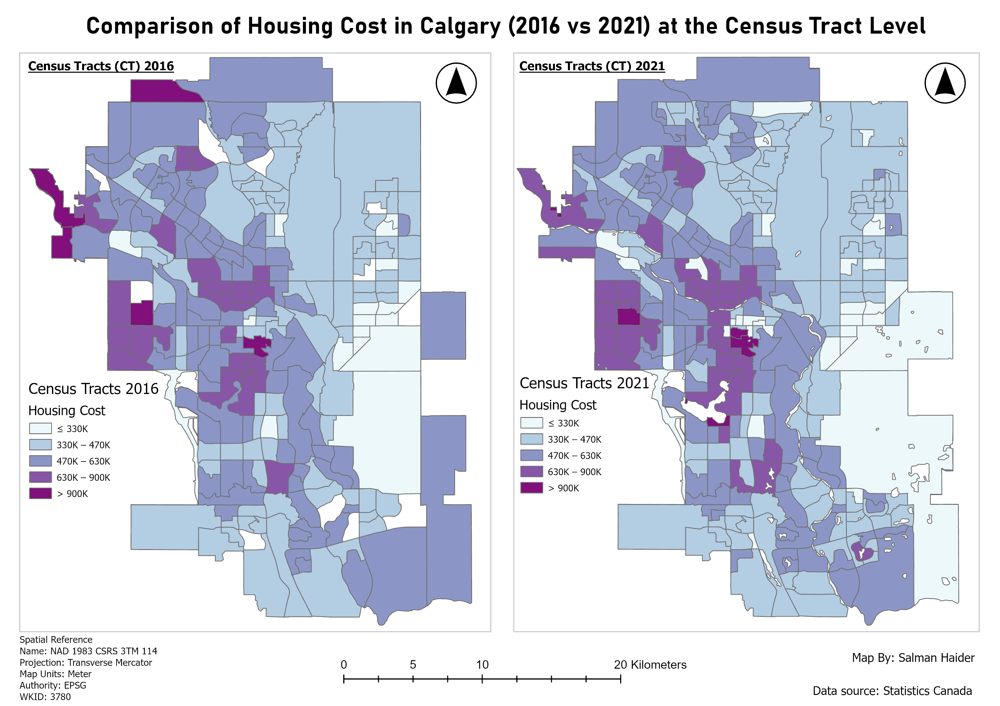
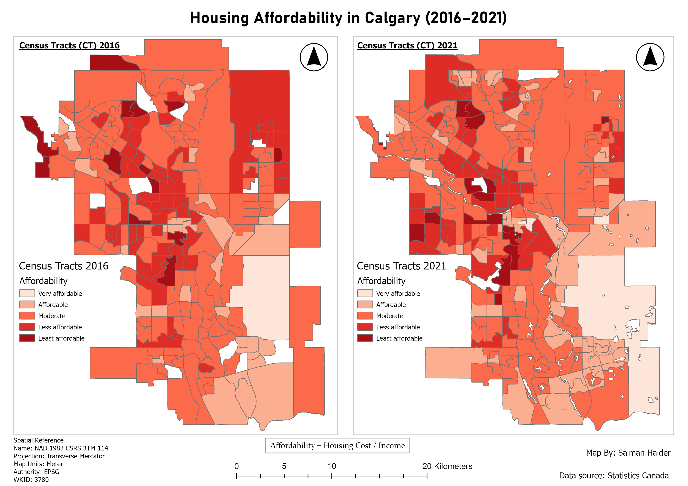

Map 01
View full map →Housing cost in Calgary: DA vs CT

I created this map series to compare housing cost and housing affordability in Calgary using census geography. The work looks at how housing patterns change between Dissemination Areas and Census Tracts, and how housing cost and affordability changed between 2016 and 2021.



The purpose of this map series was to understand housing cost and affordability patterns in Calgary using census geography. I wanted to compare the same topic from different angles: first by geography level, then by time, and finally by affordability rather than only housing cost.
The first map compares housing cost in 2021 using Dissemination Areas and Census Tracts. The second map compares housing cost at the Census Tract level between 2016 and 2021. The third map compares housing affordability between 2016 and 2021 using housing cost divided by income.
I worked with Statistics Canada census data and boundary files for Calgary. The workflow started by clipping the Dissemination Area and Census Tract boundary layers to the Calgary boundary. I then projected the boundary datasets to NAD 1983 CSRS 3TM 114, which is appropriate for mapping Calgary at this scale.
After preparing the boundaries, I imported the housing cost and income tables into ArcGIS Pro. I renamed the key fields so they could be joined properly to the spatial boundary layers. Once the joins were complete, I exported the joined layers as new feature classes so the data could be symbolized and mapped.
The first map compares 2021 housing cost at two different census geography levels: Dissemination Areas and Census Tracts. Dissemination Areas show much more local detail, while Census Tracts generalize the pattern into larger geographic units.
This comparison shows why scale matters in urban GIS. The DA map reveals smaller pockets of high and low housing cost that are less visible in the CT map. The CT map is cleaner and easier to read at a citywide scale, but it smooths over some local variation. This makes the map a good example of how the same data theme can look different depending on the geography used.
The second map compares housing cost at the Census Tract level between 2016 and 2021. I used a consistent classification scheme for both years so the comparison would be fair. If each year had different class breaks, the map could make the change look larger or smaller than it really was.
The map shows that housing cost increased in many parts of Calgary between 2016 and 2021. Central and southwest areas that were already expensive in 2016 generally remained expensive in 2021. Some areas appear to shift categories, which may partly relate to changes in Census Tract boundaries and how values were recalculated over time.
Housing affordability was calculated by dividing housing cost by income. This was important because housing cost alone does not explain affordability. A place can have high housing costs but also higher incomes, while another area may have lower housing costs but still be less affordable relative to income.
The affordability map shows that many parts of Calgary became less affordable in 2021. More Census Tracts fall into the less affordable and least affordable categories compared with 2016. Central and western parts of Calgary show lower affordability in both years, while more affordable areas are generally found toward outer parts of the city, especially in the southeast and some northeast areas.
I used different classification approaches depending on the purpose of each map. For the DA vs CT map, the goal was to show the housing cost pattern across two different geography levels in the same year. I used Natural Breaks because the data distribution was skewed and Jenks classification helped reveal natural clusters in the values.
For the 2016 vs 2021 comparison maps, I used consistent manual class ranges. This was important because those maps were meant for comparison over time. Using the same class breaks allowed the viewer to compare the two years directly without being misled by changing classification ranges.
Some Dissemination Areas and Census Tracts had zero or missing housing cost values. I checked some of these areas with a satellite image basemap and found that many were not residential areas. They included parks, industrial areas, airports, vacant land, or other places where housing cost data would not be expected.
Missing values can also happen because of privacy rules, low survey response, or boundary changes between census years. Because of this, I treated those areas carefully instead of assuming they represented normal housing market conditions.
This project helped me understand how important census geography is in urban analysis. Dissemination Areas and Census Tracts can tell different stories because they represent different levels of spatial detail. The DA map shows finer local variation, while the CT map is better for a broader citywide overview.
I also learned that comparison maps need careful classification decisions. If the goal is to compare two time periods, the class breaks need to stay consistent. Otherwise, the map can confuse the viewer. This project was a useful example of how spatial scale, time, and classification choices all affect the final interpretation.